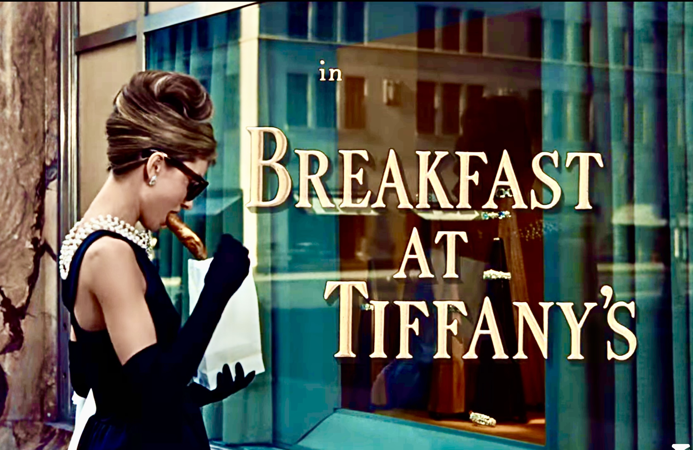

Breakfast at Tiffany's is a 1961 American romantic comedy film directed by Blake Edwards from a screenplay by George Axelrod and based on the 1958 novella by Truman Capote. It stars Audrey Hepburn, George Peppard, Patricia Neal, Buddy Ebsen, Martin Balsam, and Mickey Rooney. In the film, Holly Golightly (Hepburn), a naïve, eccentric socialite meets Paul Varjak (Peppard), a struggling writer who moves into her apartment building. (Wikipedia)
